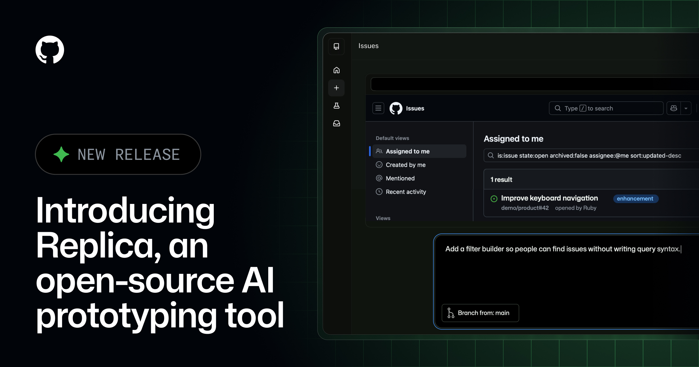
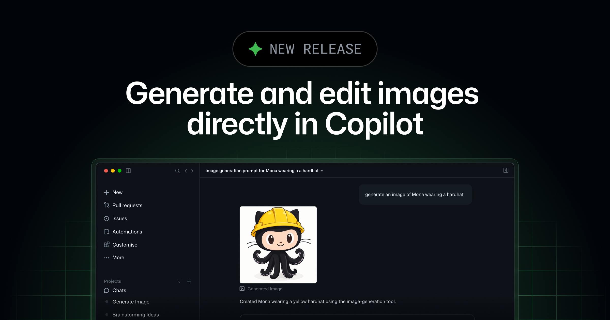
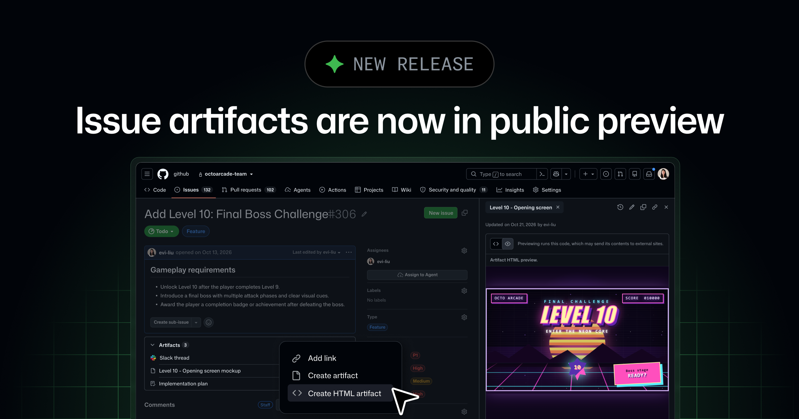
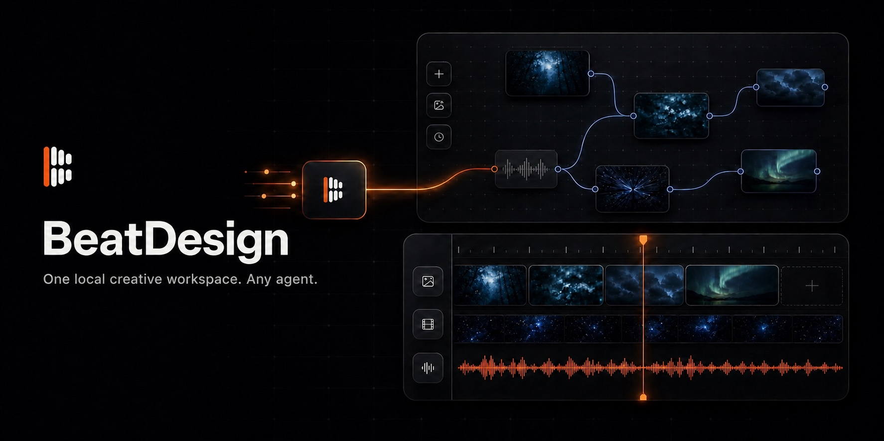
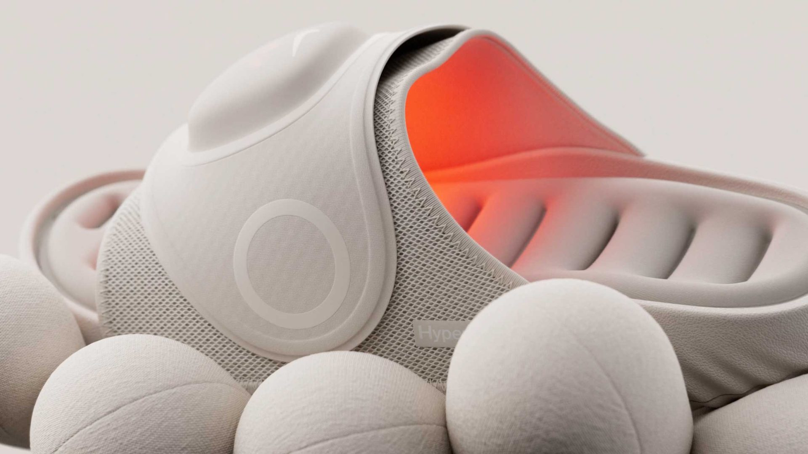

GitHub 昨晚一口气把原型、图片、研究稿和自动化都塞回了仓库。不是又造了一个万能画布，而是让设计产物开始跟着 issue、分支和项目一起活着——这条路比单独开一个 AI 设计网站靠谱得多。
但热闹归热闹，账还是要看。Copilot 生成图片单独扣 AI credits，Replica 要先喂团队组件，OpenStitch 想跑得像样还得准备本地模型。今天真正该拿走的，不是“AI 也会做设计了”，而是三件更具体的事：结果能不能继续编辑、上下文能不能留住、钱和权限有没有闸门。

GitHub Design 把内部原型工具 Replica 开源了，MIT 许可。它不是白纸生页面：先读团队已有的组件、模式和文档，再从 Copilot 对话里长出可交互原型；本地能跑，也可以自托管 Replica Hub 给同事看和评论。
这方向我认。通用生成器最大的问题，从来不是首屏不够漂亮，而是根本不认识你们家的按钮、表格和权限逻辑。Replica 把“设计系统由谁定义”留给设计师，把快速拼原型交给全团队，分工比一句 prompt 包打天下清醒得多。还没实测，先盯两个地方：旧组件升级后原型会不会一起漂，以及生成结果到底有多少是可维护代码。

Copilot App、VS Code 和 CLI 现在都能在对话里生成或修改图片，底层是 GPT Image 2.5 Flare。结果会在当前会话预览，并直接存进项目。公测覆盖 Pro、Pro+、Business 和 Enterprise，但图片 tokens 单独计入 AI credits；“Made with AI” 水印可选，而且默认关闭。
省掉来回搬图当然好，默认不加水印却有点欠考虑。仓库里的 placeholder、营销图和最终资产会很快混在一起，靠文件名猜来源迟早翻车。真要接进团队流程，先给生成目录、授权记录和人工确认加规矩，别等图片已经进发布分支才追问是谁做的。

GitHub issue 终于不只剩评论串了。公开预览里的 artifacts 可以挂 Markdown、外部链接和 HTML，HTML 还能在渲染结果与源码之间切换；计划、研究、流程图、交互 demo 都能跟着 issue 留版本。CLI 也配了 create、edit、view、download 等完整命令。
设计交付最容易丢的，正是那些“讨论过但没进稿”的东西。把原型、决策和研究贴回任务现场，比再建一份叫“最终最终版”的文档强。唯一要克制的是别把每个 agent 输出都存进去——能改变实现和验收的留下，思维过程垃圾不要永久收藏。
Adobe 给 Enterprise CCE 4/5 管理员加了组织级开关，可以停掉 Firefly-powered AI assistants，又不影响 Photoshop、Express 等产品本身继续用。这里有个容易看漏的边界：关 assistant 不等于关生成式 AI，Firefly 模型和第三方模型还要去各自的 model controls 管。
一个总开关听起来很省心，实际是两层权限。安全评审如果只问“AI 助手关了没有”，答案可能完全错误。采购和 IT 该把 assistant、生成模型、可读内容范围分开登记，不然表面封了门，窗户还开着。
OpenStitch 是个本地跑的开源 UI 工具：文字、截图或手绘线框都能转成 HTML，画布里能连页面流程，Play Mode 可以直接点，导出带 DESIGN.md 和逐屏代码。它还内置 50 多套设计系统，默认用 Ollama，本地生成不必上云。
先别被“本地”两个字哄住。README 推荐的 Qwen3 Coder 30B 就要 19GB，截图转 UI 想要最佳效果，推荐视觉模型更是 80GB；项目目前没有认证，作者明确写着不要把端口暴露到公网。32 stars、4 次提交，像一台很有意思的试验机，不是今天就能给全公司装的 Figma 替代品。

BeatDesign 把 AI 图片、视频生成、无限画布和时间线放在同一个本地项目里。生成结果不是聊天记录里的死图，而会变成 Canvas、Editor 和 MCP 共用的 Asset；Codex、Claude Code、Cursor 都能操作同一份项目。v0.2.5 还补了 generation version 对齐、音频增益和浏览器 MP4 导出。
这个“共用资产”比又一个生成模型更值钱。很多 AI 视频工具的问题不是不会出片，是每次出片都把上一轮上下文扔掉。BeatDesign 至少在认真修生产链条。不过内置生成走 BeatAPI，本地导入、剪辑和导出才不需要 key；别把 local-first 写成全程免费。还没实测，先不替它吹稳定性。
Copilot Automations 新增外部 API 触发、24 个 GitHub 事件、20 个工具、自定义 MCP 和链式运行。更实际的是 AI credits 能按每次、每天、每周或每月设限；到线后，当前运行会停，后续运行等周期重置。
这才像能放进团队的自动化。没有预算上限的 agent，不叫自动化，叫月末惊喜。视觉回归、截图归档、issue 分流这类任务都可以接，但先把单次上限和失败回读写好——尤其不要让一个坏 selector 触发一整夜自我修复。
Firefox 159 已默认启用 scroll-driven animations，滚动进度可以直接驱动动画，不再非得用一套监听器和 requestAnimationFrame 搭时间轴。旧的 masonry 实验语法则被移除，后续走 grid lanes。
对产品页来说，这是个很实在的兼容性节点。能用 CSS 做的滚动效果，就少养一点 JavaScript；但“浏览器支持”不等于“手机上该铺满动画”。先挑一个现在靠 scroll listener 驱动的段落重写，顺便把 prefers-reduced-motion 和低端机退化一起补上。

视频：Vimeo 原片播放器https://player.vimeo.com/video/1239323189｜制作：Someform Studiohttps://someform.studio/
Hyperslide 把 Nike Air Zoom 缓震和 Hyperice 的加热、振动塞进一双恢复拖鞋。Someform 没拿三个功能做 PPT，而是给它们各找了一个动作：软球承托缓震，细密脉冲表现振动，暖红光从鞋面内部慢慢透出来。整支片子的沙色基调很安静，红光只在功能启动时出现，所以那一下真的像“热起来了”，不是随便加的科技霓虹。
更聪明的是镜头一直贴着产品结构走。圆形 Pod、织物、气垫和鞋底沟槽都变成转场依据，抽象段落没有离开物件。做功能型硬件片可以直接抄这个原则：每个卖点先找一个可感知的物理隐喻，再决定材质、运动和声音；别先选一套炫技风格，再逼产品去配合它。网页上也一样，三段功能无需三个小视频，一套产品模型配三种状态就够。
1239323189。核验说明：GitHub、Adobe、OpenStitch、BeatDesign、MDN 与 Stash 官方页面于 2026-10-29 回读。正文嵌图原始宽度为 1774–2400px；OpenStitch 动图虽为 800px，细字仍偏糊，已主动省略。Hyperslide 的 Vimeo player 返回 200，飞书仍以回读到的 Preview / iframe 块为准；如果用户界面阻断，再按规则降级为 Stash 1920px 静态图。